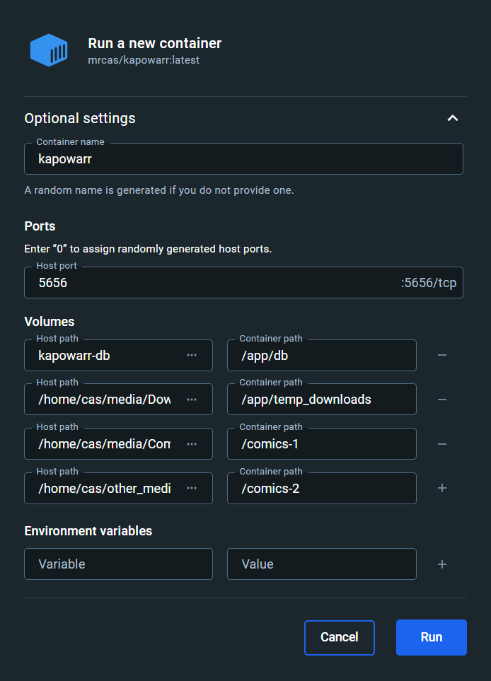

Docker
On this page, you can find instructions on how to install Kapowarr using Docker and how to update a Docker installation.
Installation¶
Install Docker¶
The first step is to install Docker, if you don't have it installed already. The official Docker documentation hub offers great instructions on how to install docker CLI and Docker Desktop. Take notice of whether you installed the 'Docker CLI' (the Docker documentation also calls this 'Docker CE') or 'Docker Desktop', for future instructions.
Quick introduction to Docker
Docker allows you to create little virtual computers, called 'containers'. You can run an application inside these containers. This is useful because you decide how much resources these containers can use, and what access these applications get to "the outside". It makes it safer (e.g. the application only has access to folders on the computer that you explicitly give it access to), and makes installation easier (the developer makes sure that inside the container everything is setup properly, not you).
Allowing folders and network connections through the container is done using 'mapping'. For example, you can map the folder D:\Comics on the host to the folder /comics inside the container. Then everything inside the host folder (D:\Comics) is visible to the application via the mapped container folder (/comics). Mapping network ports works in a similar manner.
When you turn off a container, all file changes inside the container (e.g. folders/files added) are lost. This is so that the environment inside the container when starting up is always the same. So in order to save a file/folder permanently, it has to be stored on the host and then mapped to somewhere inside the container.
Create Docker volume or folder¶
Kapowarr needs a permanent place to put the database file. This can be a Docker volume, or a folder on the host machine.
Linux standards would suggest putting the folder in /opt/application_name, as the /opt directory is where program options should be stored. This is not mandatory however; you are allowed to create a folder anywhere you like. If we apply the standard to Kapowarr, the folder would be /opt/Kapowarr/db.
Create the desired folder using the UI (if your distro offers this) or with the following shell command (replace /path/to/directory with desired path):
Permissions and ownership
The permissions on this folder need to allow the container to read, write, and execute inside it. It also needs to have proper ownership. More documentation on this subject coming.
MacOS standards would suggest putting the folder in /Applications/application_name. This is not mandatory however; you are allowed to create a folder anywhere you like. If we apply the standard to Kapowarr, the folder would be /Applications/Kapowarr/db.
Create the desired folder using the UI or with the following shell command (replace /path/to/directory with desired path):
Permissions and ownership
The permissions on this folder need to allow the container to read, write, and execute inside it. It also needs to have proper ownership. More documentation on this subject coming.
There is no defined standard for Windows on where to put such a folder. We suggest a path like C:\apps\application_name, so that it can be managed easily. This is not mandatory however; you are allowed to create a folder anywhere you like. If we apply this suggestion to Kapowarr, the folder would be C:\apps\Kapowarr\db.
Create the desired folder either using the Windows Explorer, or using the following Powershell command:
Permissions and ownership
The permissions on this folder need to allow the container to read, write, and execute inside it. It also needs to have proper ownership. More documentation on this subject coming.
Creating root folder¶
Everything that Kapowarr does concerning media files is done only within root folders. If you don't already have a folder where all your comics are in, create one. Follow the same instructions as for creating a local folder for the database, but then for your root folder.
You can create multiple root folders (on multiple drives for example). If you want multiple root folders, repeat the steps.
Permissions and ownership
Root folders require read and write permissions. More documentation on this subject coming.
Creating download folder¶
Kapowarr downloads files to the 'temporary download folder'. Create a folder where Kapowarr can download to. Follow the same instructions as for creating a local folder for the database, but then for your temporary download folder.
Permissions and ownership
The temporary download folder requires read and write permissions. More documentation on this subject coming.
Launch container¶
Now we can launch the container.
The command to get the Docker container running can be found below. But before you copy, paste and run it, read the notes below!
A few notes about this command:
- If you're using a folder on the host machine instead of a docker volume to store the database file (reference), replace
kapowarr-dbwith the path to the host folder. It's mapped to/app/dbinside the container.
Examples
"/opt/Kapowarr/db:/app/db""C:\apps\Kapowarr\db:/app/db"
- Replace
/path/to/download_folderwith the path to the desired download folder, that you created earlier. It's mapped to/app/temp_downloadsinside the container.
Examples
"/home/my-user/comic-downloads:/app/temp_downloads""D:\Comic-Downloads:/app/temp_downloads"
- Replace
/path/to/root_folderwith the path to the desired root folder, that you created earlier. It's mapped to/comics-1inside the container. So later, when Kapowarr is running and you need to add a root folder, the mapped folder is what you'll add (e.g./comics-1).
Examples
"/home/my-user/comics:/comics-1""D:\Comics:/comics-1"
- You can map multiple root folders by repeating
-v "/path/to/root_folder:/comics-1"(or-v "DRIVE:\with\root_folder:/comics-1"for Windows) in the command, but then supplying different values for/path/to/root_folderand/comics-1.
Examples
-v "/home/my-user/comics-2:/comics-2" \-v "E:\Comics:/comics-2"
- Information on how to change the port can be found on the Setup After Installation page.
The contents of the docker-compose.yml file are below. The source file can also be found on GitHub. But before you copy, paste and run it, read the notes below!
version: "3.3"
services:
kapowarr:
container_name: kapowarr
image: mrcas/kapowarr:latest
volumes:
- "kapowarr-db:/app/db"
- "/path/to/download_folder:/app/temp_downloads"
- "/path/to/root_folder:/comics-1"
ports:
- 5656:5656
volumes:
kapowarr-db:
Then run the following command to start the container. Run this command from within the directory where the docker-compose.yml file is located.
A few notes about the docker-compose.yml file:
- If you're using a folder on the host machine instead of a docker volume to store the database file (reference), replace
kapowarr-dbwith the path to the host folder. It's mapped to/app/dbinside the container.
Examples
"/opt/Kapowarr/db:/app/db""C:\apps\Kapowarr\db:/app/db"
- Replace
/path/to/download_folderwith the path to the desired download folder, that you created earlier. It's mapped to/app/temp_downloadsinside the container.
Examples
"/home/my-user/comic-downloads:/app/temp_downloads""D:\Comic-Downloads:/app/temp_downloads"
- Replace
/path/to/root_folderwith the path to the desired root folder, that you created earlier. It's mapped to/comics-1inside the container. So later, when Kapowarr is running and you need to add a root folder, the mapped folder is what you'll add (e.g./comics-1).
Examples
"/home/my-user/comics:/comics-1""D:\Comics:/comics-1"
- You can map multiple root folders by repeating
- "/path/to/root_folder:/comics-1"in the command, but then supplying different values for/path/to/root_folderand/comics-1.
Examples
- "/home/my-user/comics-2:/comics-2"- "E:\Comics:/comics-2"
- Information on how to change the port can be found on the Setup After Installation page.
- Click the search bar at the top and search for
mrcas/kapowarr. - Click
Runon the entry sayingmrcas/kapowarr. - Open
Images, and on the right, underActionsclick the play/run button formrcas/kapowarr. - Expand the 'Optional settings'.
- For the
Container name, set the value tokapowarr. - For the
Host port, set the value to5656. Information on how to change the port can be found on the Setup After Installation page. - For the
Host path, set the value tokapowarr-dbif you are using a Docker volume for the database. Otherwise, set it to the folder where you want to store the database, that you created earlier. Set the accompanyingContainer pathto/app/db. - Add another volume mapping using the plus button on the right. Enter your download folder (that you created earlier) as the value of
Host pathand set the accompanyingContainer pathto/app/temp_downloads. - Add another volume mapping using the plus button on the right. Enter your root folder (that you created earlier) as the value of
Host pathand set the accompanyingContainer pathto/comics-1. Later, when Kapowarr is running and you need to add a root folder, the mapped folder is what you'll add (e.g./comics-1). - If you have multiple root folders, repeat step 9, but with a different value for
Host pathandContainer path.
Example¶
Below you can find an example of running a Docker command and an example of a Docker Compose file.

- We use a Docker volume as the place to store the database file.
- We set
/home/cas/media/Downloadsas the download folder. - We map the folder
/home/cas/media/Comicsto/comics-1. - We map the folder
/home/cas/other_media/Comics-2to/comics-2. - In Kapowarr we'd then add
/comics-1and/comics-2as root folders, but more information on that on the Setup After Installation page.
Update install¶
Below you can find instructions on how to update an install. In order for the database to properly migrate, upgrade minor version by minor version (i.e. v1.0.0, v1.1.0, v1.2.0, etc.).
If needed, run these commands with sudo. It is assumed that the name of the container is kapowarr (which is set using the --name option in the command).
docker container stop kapowarrdocker container rm kapowarrdocker image rm mrcas/kapowarr:latest- Run the command you previously used to start the container.
If needed, run these commands with sudo. You need to be in the same directory as the docker-compose.yml file when running these commands.
docker-compose downdocker-compose pulldocker-compose up -ddocker image prune -f
- Open
Containersand locate thekapowarrcontainer in the list. - Click the stop button on the right, then the delete button.
- Open
Imagesand locate themrcas/kapowarrimage in the list. - Click the delete button on the right.
- Repeat the steps of launching the container.